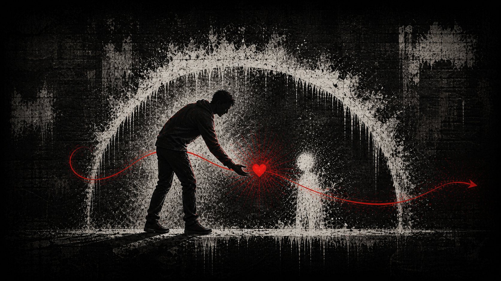

Album 03 / 09 · GhostHeart
FatherHood
What we inherit, what we refuse to pass down, and the love we choose to give.

Read · The album story
A note from GhostHeart.
FATHERHOOD is the story of what we inherit from our fathers, what we refuse to pass down, and the love we choose to give our children.
These songs carry every side of being a dad—the fear, responsibility, sacrifice, mistakes, pride, protection, and moments that make everything worth it. It is about breaking cycles and becoming the father I needed while learning to be the father my children deserve.
This album isn’t about being perfect. It’s about showing up, loving without limits, admitting when you’re wrong, and leaving your children more light than pain.
Every song is part confession, part promise, and part legacy.
This is FATHERHOOD.
The music
A place for these songs.
The FatherHood collection is taking shape. There are no songs listed here yet.
Explore the other albums ↗